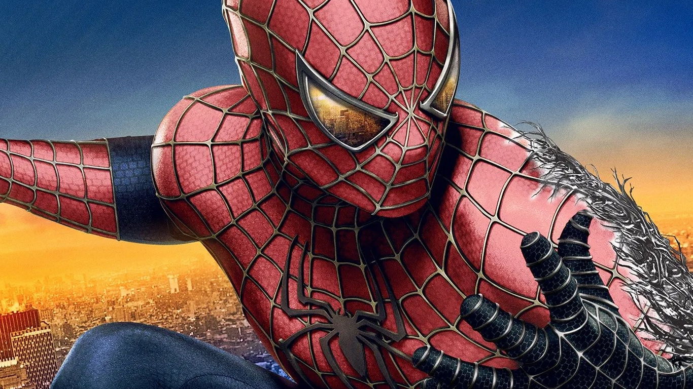
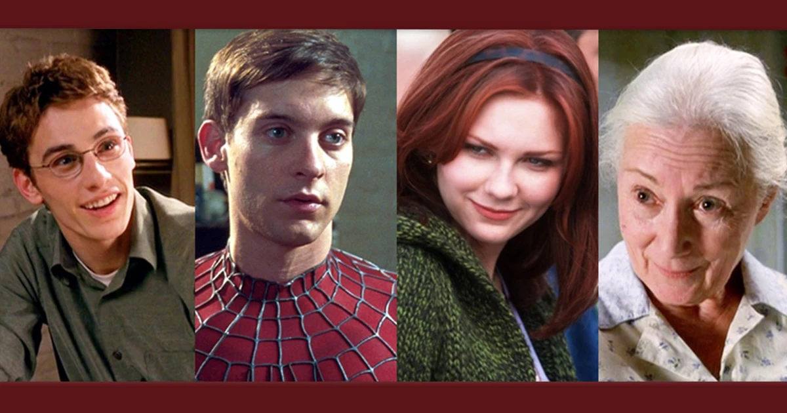
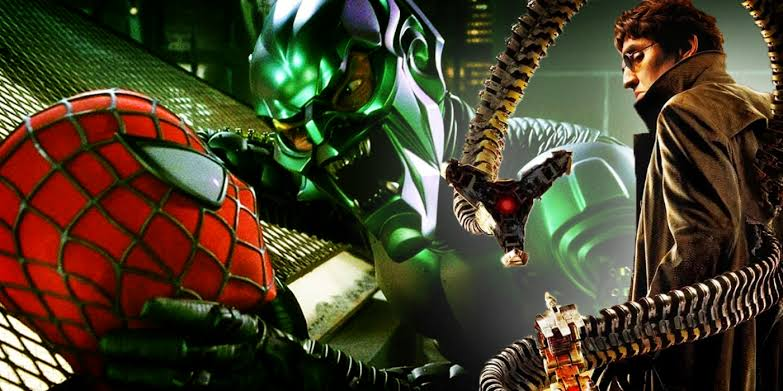
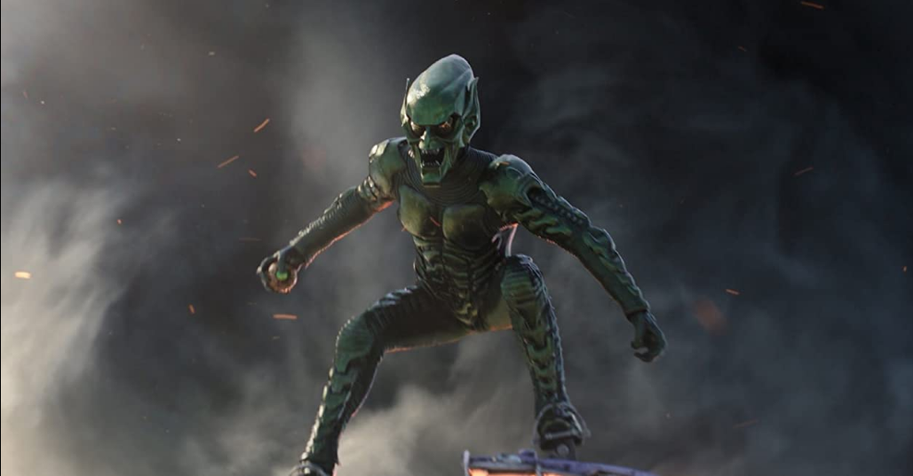
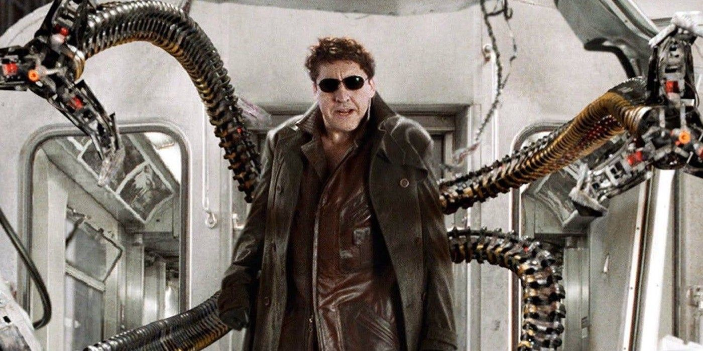
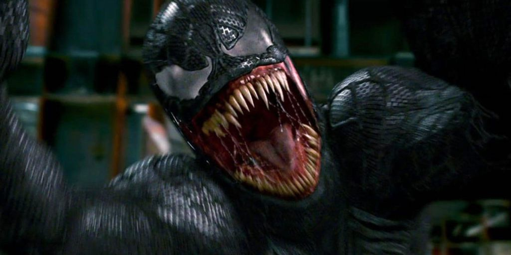
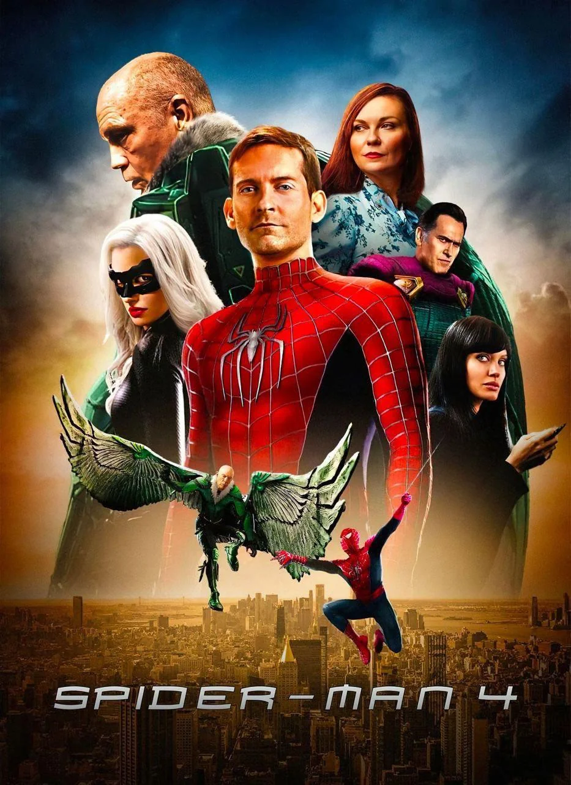

A morte do Tio Ben
Esse acontecimento é o ponto de virada emocional da história. Peter passa a entender que seus poderes exigem responsabilidade.
Antes de se tornar o herói que conhecemos, Peter Parker viveu uma infância marcada por perdas e responsabilidades. Após a morte do Tio Ben, ele aprende que “com grandes poderes vêm grandes responsabilidades”. Esse momento transforma sua vida para sempre.
Na trilogia dirigida por Sam Raimi, Tobey Maguire mostra um Peter Parker jovem, vulnerável e profundamente humano. A jornada começa com a origem do herói e segue até o retorno simbólico em No Way Home.

Esse acontecimento é o ponto de virada emocional da história. Peter passa a entender que seus poderes exigem responsabilidade.
Ao longo da trilogia, ele aprende com seus erros, lutas e perdas, tornando-se mais forte e consciente.
Na aparição de Tobey Maguire, o personagem representa a essência da primeira fase do cinema do Aranha.
A interpretação de Tobey Maguire ganhou ainda mais força graças aos personagens que cercaram Peter Parker. Eles ajudam a construir sua identidade e suas maiores perdas.

Ela representa um grande vínculo emocional na vida de Peter, além de ser uma peça essencial em sua trajetória.
Amigo de Peter que se torna um dos personagens mais marcantes da trilogia, com impacto profundo na narrativa.
É uma figura de apoio emocional, sendo uma mãe substituta e fonte de conselhos para Peter.
Os vilões da trilogia de Tobey Maguire são fundamentais para mostrar o lado trágico e o peso emocional do herói. Cada um deles representa uma ameaça física e moral para Peter.


Ano de criação: 1964
Primeiro quadrinho: The Amazing Spider-Man #14
Importância: Um dos grandes vilões da história do Aranha, representando a dualidade entre ambição e tragédia.

Ano de criação: 1963
Primeiro quadrinho: The Amazing Spider-Man #3
Importância: Um dos vilões mais complexos da trilogia, mostrando a confrontação entre genialidade e destruição.

Ano de criação: 1988
Primeiro quadrinho: The Amazing Spider-Man #300
Importância: Sua presença reforça a ideia de que o maior inimigo muitas vezes é a própria sombra do herói.
Além das principais histórias e vilões, o universo de Tobey Maguire oferece várias possibilidades de exploração. A estética, os temas e os simbolismos da trilogia continuam sendo referência para fãs do personagem.

A trilogia ajudou a transformar a imagem do Homem-Aranha em uma referência de cinema moderno e emoção adolescente.
O visual com cores vibrantes, ação estilizada e uma atmosfera quase teatral fizeram o universo do herói ganhar identidade própria.
Mesmo com adaptações mais recentes, Tobey Maguire continua sendo lembrado como uma das interpretações mais significativas do personagem.